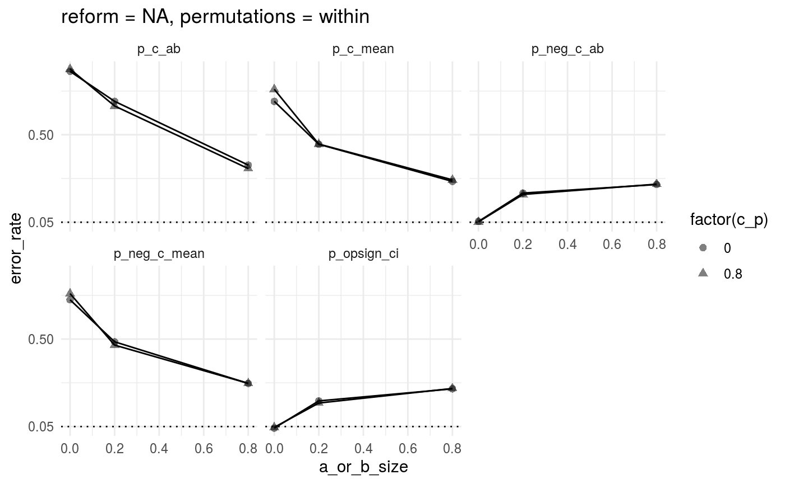
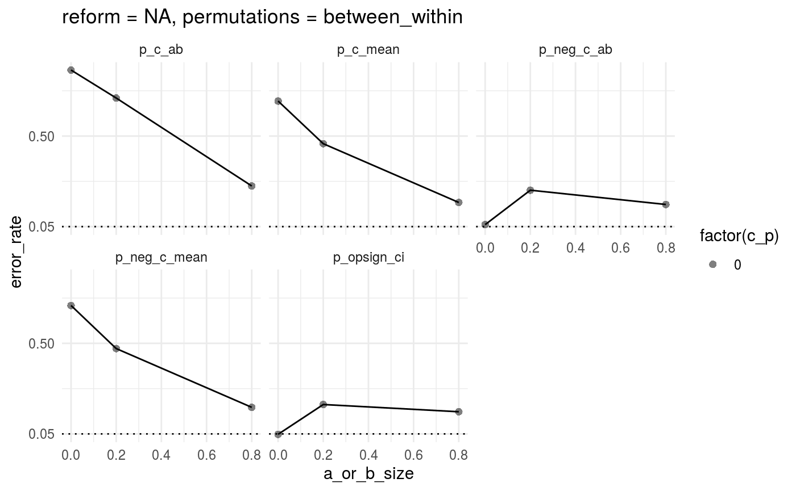

Error rate of permutation method
John Flournoy
2019-11-22
permediatr.RmdThe output from the simulations needs to be collected first from the csv output. Another aspect of the output is that each simulation gives the p-value of the indirect path as just the cumulative probability. We want to reject the null for any indirect path where that is either < .025 or > .975. I’ll summarize the output to look at the error rate (any null rejection) for each subset of simulation input (a path, b path, and c_p path). There are three ways I could imagine getting a p-value from the permutation-generated confidence interval – first, subtracting the mean of all permutations, to center the CI around 0, p_ab_perm_mean_c; second, centering that distribution around the model-estimated a*b path, p_ab_perm_ab_c; and third, taking the proportion of the CI that is below 0. In the final case, to keep the test two-sided, we reject the null when > .025 proportion of the tail is of the sign opposite the indirect effect estimate.
library(permediatr)
library(data.table)
library(ggplot2)
file_list <- dir(system.file('csv', package = 'permediatr'),
pattern = '*csv', full.names = TRUE)
sim_results <- data.table::rbindlist(lapply(file_list, data.table::fread), fill = TRUE)
set(sim_results, i = which(is.na(sim_results[['permtype']])), j = 'permtype', 'within')
proportion_fp <- function(p) {
return(mean(p < .025) + mean(p > .975))
}
sim_results[, a_or_b_size := pmax(a,b)]
sim_results_summary <-
sim_results[, .(p_c_ab = proportion_fp(p_c_ab),
p_c_mean = proportion_fp(p_c_mean),
p_neg_c_ab = proportion_fp(p_neg_c_ab),
p_neg_c_mean = proportion_fp(p_neg_c_mean),
p_opsign_ci = mean(p_opsign_ci < .025)),
by = .(a_or_b_size, c_p, reform, permtype)]
sim_results_summary_l <- data.table::melt(sim_results_summary, id.vars = c('a_or_b_size', 'c_p', 'reform', 'permtype'),
measure.vars = c('p_c_ab', 'p_c_mean', 'p_neg_c_ab', 'p_neg_c_mean', 'p_opsign_ci'), value.name = 'error_rate')ggplot(sim_results_summary_l[reform == 'NULL' & permtype == 'within'],
aes(x = a_or_b_size, y = error_rate, group = c_p)) +
geom_hline(yintercept = .05, linetype = 'dotted') +
geom_point(aes(shape = factor(c_p)), alpha = .5, size = 2) +
geom_line() +
scale_y_continuous(breaks = c(.05, .5, 1)) +
facet_wrap(~variable) +
theme_minimal() +
labs(title = 'reform = NULL, permutations = within')
ggplot(sim_results_summary_l[is.na(reform) & permtype == 'within'],
aes(x = a_or_b_size, y = error_rate, group = c_p)) +
geom_hline(yintercept = .05, linetype = 'dotted') +
geom_point(aes(shape = factor(c_p)), alpha = .5, size = 2) +
geom_line() +
scale_y_continuous(breaks = c(.05, .5, 1)) +
facet_wrap(~variable) +
theme_minimal() +
labs(title = 'reform = NA, permutations = within')
ggplot(sim_results_summary_l[is.na(reform) & permtype == 'between_within'],
aes(x = a_or_b_size, y = error_rate, group = c_p)) +
geom_hline(yintercept = .05, linetype = 'dotted') +
geom_point(aes(shape = factor(c_p)), alpha = .5, size = 2) +
geom_line() +
scale_y_continuous(breaks = c(.05, .5, 1)) +
facet_wrap(~variable) +
theme_minimal() +
labs(title = 'reform = NA, permutations = between_within')
| a_or_b_size | c_p | reform | permtype | variable | error_rate |
|---|---|---|---|---|---|
| 0.0 | 0.0 | NULL | within | p_c_ab | 0.432 |
| 0.2 | 0.0 | NULL | within | p_c_ab | 0.474 |
| 0.8 | 0.0 | NULL | within | p_c_ab | 0.335 |
| 0.0 | 0.8 | NULL | within | p_c_ab | 0.512 |
| 0.2 | 0.8 | NULL | within | p_c_ab | 0.466 |
| 0.8 | 0.8 | NULL | within | p_c_ab | 0.320 |
| 0.0 | 0.0 | NA | within | p_c_ab | 0.826 |
| 0.2 | 0.0 | NA | within | p_c_ab | 0.672 |
| 0.8 | 0.0 | NA | within | p_c_ab | 0.344 |
| 0.0 | 0.8 | NA | within | p_c_ab | 0.838 |
| 0.2 | 0.8 | NA | within | p_c_ab | 0.648 |
| 0.8 | 0.8 | NA | within | p_c_ab | 0.326 |
| 0.0 | 0.0 | NA | between_within | p_c_ab | 0.828 |
| 0.2 | 0.0 | NA | between_within | p_c_ab | 0.689 |
| 0.8 | 0.0 | NA | between_within | p_c_ab | 0.252 |
| 0.0 | 0.0 | NULL | within | p_c_mean | 0.246 |
| 0.2 | 0.0 | NULL | within | p_c_mean | 0.325 |
| 0.8 | 0.0 | NULL | within | p_c_mean | 0.309 |
| 0.0 | 0.8 | NULL | within | p_c_mean | 0.274 |
| 0.2 | 0.8 | NULL | within | p_c_mean | 0.309 |
| 0.8 | 0.8 | NULL | within | p_c_mean | 0.278 |
| 0.0 | 0.0 | NA | within | p_c_mean | 0.672 |
| 0.2 | 0.0 | NA | within | p_c_mean | 0.451 |
| 0.8 | 0.0 | NA | within | p_c_mean | 0.260 |
| 0.0 | 0.8 | NA | within | p_c_mean | 0.734 |
| 0.2 | 0.8 | NA | within | p_c_mean | 0.452 |
| 0.8 | 0.8 | NA | within | p_c_mean | 0.268 |
| 0.0 | 0.0 | NA | between_within | p_c_mean | 0.674 |
| 0.2 | 0.0 | NA | between_within | p_c_mean | 0.462 |
| 0.8 | 0.0 | NA | between_within | p_c_mean | 0.170 |
| 0.0 | 0.0 | NULL | within | p_neg_c_ab | 0.058 |
| 0.2 | 0.0 | NULL | within | p_neg_c_ab | 0.186 |
| 0.8 | 0.0 | NULL | within | p_neg_c_ab | 0.296 |
| 0.0 | 0.8 | NULL | within | p_neg_c_ab | 0.084 |
| 0.2 | 0.8 | NULL | within | p_neg_c_ab | 0.155 |
| 0.8 | 0.8 | NULL | within | p_neg_c_ab | 0.286 |
| 0.0 | 0.0 | NA | within | p_neg_c_ab | 0.054 |
| 0.2 | 0.0 | NA | within | p_neg_c_ab | 0.200 |
| 0.8 | 0.0 | NA | within | p_neg_c_ab | 0.244 |
| 0.0 | 0.8 | NA | within | p_neg_c_ab | 0.052 |
| 0.2 | 0.8 | NA | within | p_neg_c_ab | 0.193 |
| 0.8 | 0.8 | NA | within | p_neg_c_ab | 0.246 |
| 0.0 | 0.0 | NA | between_within | p_neg_c_ab | 0.060 |
| 0.2 | 0.0 | NA | between_within | p_neg_c_ab | 0.231 |
| 0.8 | 0.0 | NA | between_within | p_neg_c_ab | 0.160 |
| 0.0 | 0.0 | NULL | within | p_neg_c_mean | 0.272 |
| 0.2 | 0.0 | NULL | within | p_neg_c_mean | 0.345 |
| 0.8 | 0.0 | NULL | within | p_neg_c_mean | 0.308 |
| 0.0 | 0.8 | NULL | within | p_neg_c_mean | 0.304 |
| 0.2 | 0.8 | NULL | within | p_neg_c_mean | 0.327 |
| 0.8 | 0.8 | NULL | within | p_neg_c_mean | 0.282 |
| 0.0 | 0.0 | NA | within | p_neg_c_mean | 0.702 |
| 0.2 | 0.0 | NA | within | p_neg_c_mean | 0.486 |
| 0.8 | 0.0 | NA | within | p_neg_c_mean | 0.272 |
| 0.0 | 0.8 | NA | within | p_neg_c_mean | 0.734 |
| 0.2 | 0.8 | NA | within | p_neg_c_mean | 0.469 |
| 0.8 | 0.8 | NA | within | p_neg_c_mean | 0.272 |
| 0.0 | 0.0 | NA | between_within | p_neg_c_mean | 0.688 |
| 0.2 | 0.0 | NA | between_within | p_neg_c_mean | 0.474 |
| 0.8 | 0.0 | NA | between_within | p_neg_c_mean | 0.182 |
| 0.0 | 0.0 | NULL | within | p_opsign_ci | 0.058 |
| 0.2 | 0.0 | NULL | within | p_opsign_ci | 0.186 |
| 0.8 | 0.0 | NULL | within | p_opsign_ci | 0.296 |
| 0.0 | 0.8 | NULL | within | p_opsign_ci | 0.084 |
| 0.2 | 0.8 | NULL | within | p_opsign_ci | 0.155 |
| 0.8 | 0.8 | NULL | within | p_opsign_ci | 0.286 |
| 0.0 | 0.0 | NA | within | p_opsign_ci | 0.042 |
| 0.2 | 0.0 | NA | within | p_opsign_ci | 0.182 |
| 0.8 | 0.0 | NA | within | p_opsign_ci | 0.244 |
| 0.0 | 0.8 | NA | within | p_opsign_ci | 0.046 |
| 0.2 | 0.8 | NA | within | p_opsign_ci | 0.171 |
| 0.8 | 0.8 | NA | within | p_opsign_ci | 0.246 |
| 0.0 | 0.0 | NA | between_within | p_opsign_ci | 0.048 |
| 0.2 | 0.0 | NA | between_within | p_opsign_ci | 0.196 |
| 0.8 | 0.0 | NA | between_within | p_opsign_ci | 0.160 |